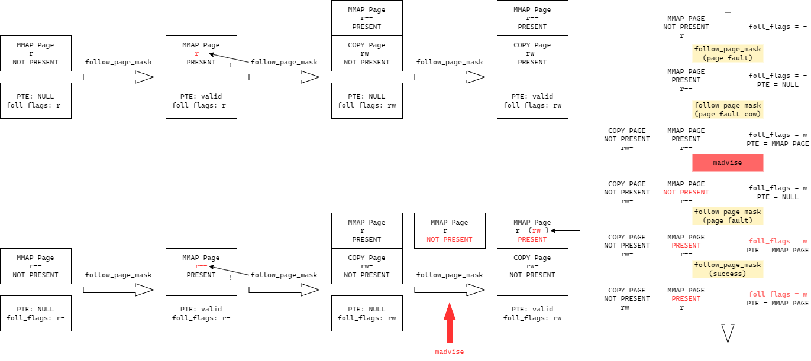

Dirty COW脏牛漏洞是一个非常有名的Linux竞争条件漏洞，虽然早在2016年就已经被修复，但它依然影响着众多古老版本的Linux发行版，如果需要了解Linux的COW，依然非常值得学习。
漏洞：CVE-2016-5195
影响Linux版本：>2.6.22, <4.8.3 / 4.7.9 / 4.4.26
漏洞类型：竞争条件
使用Linux样本：4.8.2
注意：4.8.2版本较低，如果使用较高版本的gcc编译，可能会产生一些难以解决的问题，如一直重启等，这里使用的是Ubuntu 16.04中的gcc完成编译，在22.04的qemu中可以正常运行。
poc
poc来源：资料
1 |
|
简单解释一下，这个程序需要两个参数，第一个参数是需要被修改的只读文件，第二个参数是可读的其他文件。执行后第一个文件中的内容将会被改写为第二个文件的内容。程序会通过mmap系统调用将第一个文件映射到内存空间，随后创建两个线程，一个线程循环通过write打开当前进程的mem虚拟文件对映射的内存进行写操作，一个线程循环调用madvise系统调用提示内核：这块映射的内存空间不再需要。这样，这块映射内存会在某个时刻被内核释放掉。
那么这个漏洞的原理是什么呢？简单看看上面的参考博客，发现要理解起来还是有一定难度的。
前置知识
页表与缺页异常
在操作系统这门课中我们学到，现代操作系统对于内存地址有一定的处理。内存被分为若干页，在进程中被处理的内存页均为虚拟内存页，其地址与物理内存页不同，因此需要有一个物理页和虚拟页的映射表。这个映射表由内存管理单元MMU管理，每一个进程都有一个映射表。
对于现代操作系统，页表一般是多级的，这样做的好处是可以节省内存空间，并降低页表内存空间的连续性。什么意思呢？假如页表只有一级，对于一个64位地址，最低12位作为页内偏移，那么高52位都将作为页表的索引地址。为了效率考虑，MMU只能使用数组进行索引，那么这样的话就会有252个页表项，而其中绝大部分都是空的，会大大浪费内存空间，且这块空间是连续的。而如果使用二级页表，中间12位为二级页表索引，最高40位为一级页表索引，这样理论上只有240个一级页表项，它们连续存储的空间消耗大大小于只使用一级页表的情况（虽然还是很大）。而当一个一级页表对应的地址范围都无效时，内存中完全可以不保存它所对应的二级页表，将二级页表的物理地址设置为0表示无效即可，这样大大节省了空间。否则，一级页表项保存其下的二级页表地址。
目前主流x86 Linux系统使用4级（多数）或5级页表，对于4级页表，索引64位虚拟地址空间时，假设最低12位作为页内偏移，每一级页表项负责13位（实际不是这样安排的），即一个一级页表项下面有213个二级页表项，一个二级页表项下面有213个三级页表项，以此类推。那么这样一共就会有213个一级页表。假设一个进程只有一个有效的虚拟内存页，那么四级页表系统只需要保存：213个一级页表项（其中只有有效虚拟内存页对应的一级页表项具有有效的二级页表地址）、213个二级页表项（其中只有有效虚拟内存页对应的二级页表项具有有效的三级页表地址）、213个三级页表项（…）、213个四级页表项（…），共215个页表项，如果一个页表项的大小为0x10字节，那么一共就只有320KB用来保存页表项，对于现在的内存来说完全够用。
由上面的分析可知，映射表中通常只会保存很少的页表项PTE（Page Table Entry），页表的级数越多，映射访问需要访存的次数越多，效率越低。为此，人们为现代OS提供了TLB进行访存提速，它相当于一个能够动态记录页表项且并行查找的硬件，这不是本文的重点，略过。
如果CPU访问了一个虚拟地址，而这个虚拟地址不存在于任何一个PTE中，或者进行的访问操作（读或写）在这个页中没有权限进行，那么MMU会向OS报缺页异常。
缺页异常一共分为3类：硬缺页、软缺页以及无效缺页。前两种都是有效的缺页，可以被合理处理；而后面一种是真正的异常，会导致进程立即中止。这三种异常到底什么意思呢？
- 硬缺页异常：物理内存没有对应的页帧。什么意思？比如你的笔记本内存不够，你设置了磁盘的内存交换，让OS在物理内存不足时将暂时没有使用的内存内容移动到磁盘中，空余出内存存放其他的重要数据。这样，原来的内存数据就暂时不在内存之中，即没有对应的页帧。此类异常的处理通常需要较大开销。（实际上的可能场景有三种，具体内容详见资料，很详细很长但是非常复杂，在此%一下作者，这是真大佬，没见过对内核内存管理理解这么透彻的）
- 软缺页异常：物理内存有对应页帧。这类大多是发生在写时复制COW时，当父进程fork出一个子进程后，子进程需要对内存空间进行修改，那么OS就需要将父进程的部分内存复制一份，随后将这个新的页填入到子进程页表的对应位置。
- 无效缺页异常：要访问的虚拟内存地址原本就是无效的，本来就不应该有物理内存映射。此类问题会报段错误并中止进程。
/proc/self/mem的写入流程
（下面的函数名前面加@的带链接可跳转查看）
这是一个/proc目录下的特殊文件，/proc/self表示当前进程，而mem则作为一个虚拟文件，表示当前进程的内存空间。
我们都知道，当用户程序通过open函数打开一个文件时，内核会为用户程序返回一个文件描述符，用户程序后续可通过这个文件描述符整数对文件进行操作。为了将文件操作与不同文件（普通文件、进程文件、设备文件等）解耦合，Linux设计了一个file_operations结构体，对文件描述符进行读、写等操作时，在内核中实际上是在执行file_operations中的读写函数。
而对于/proc目录下表示内存的文件，Linux内核定义了属于这些文件的file_operations：
1 | static const struct file_operations proc_mem_operations = { |
也即打开/proc/self/mem后，我们调用write函数实际上在内核调用的是mem_write。通过查看源码发现，它实际上调用的是@mem_rw：
- 内核首先会通过
__get_free_page获得一个临时的空闲内存页 - 使用
copy_from_user将当前进程的内存数据复制到临时页。 - 调用
access_remote_vm对临时内存进行访问，完成读写操作。
而对于access_remote_vm（全部逻辑在@__access_remote_vm），主要操作包括：
- 调用
down_read为内存上读锁。 - 进入循环：
- 调用
get_user_pages_remote函数，获取要读或写的内存页的物理地址。 - 如果内存页获取失败，进行其他处理。
- 内存页获取成功后，每一次以一页为单位进行读或写操作，首先计算要操作的内存大小，随后调用
kmap将要操作的内存映射到一个内核内存页中。 - 如果操作为写，则调用
copy_to_user_page向映射的内存页写入数据，并设置内存页为脏页（set_page_dirty_lock） - 调用
kunmap解除映射，并删除cache中的对应项。
- 调用
- 调用
up_read为内存解锁读锁。
那么这里面的重点就在于get_user_pages_remote，它是如何获取物理地址的。调用链为：
1 | get_user_pages_remote |
主要逻辑都在后面两个函数中。首先看到@__get_user_pages_locked。这个函数中有一个大循环，其中调用了两次@__get_user_pages，这个函数内部的逻辑大概为：
- 定义一个
vm_area_struct实例vma初始化为空。vma表示虚拟内存区域，通常与一页或多页相关联。 - 一个大循环。
- 如果
vma为空或要获取的地址超过了vma的范围：- 调用
find_extend_vma函数获取vma。 - 进行其他的处理，完成后返回或继续进行下一页处理。
- 调用
- 调用
follow_page_mask获取给定虚拟地址对应的物理页。 - 如果没有获取到，可能原因是对应物理页不存在或没有写权限：
- 调用
faultin_page进行缺页异常处理。 - 如果处理成功则重试，跳转到调用
follow_page_mask之前；否则返回或处理下一页。
- 调用
- 否则如果页表不存在，则处理下一页。
- 否则如果返回错误值，立即返回。
- 进行页面的其他处理，刷新计数器。
- 如果
下面看到@faultin_page。这个函数里涉及大量针对flags参数的判断与修改，根据源码分析发现，传入这个函数的flags参数为FOLL_TOUCH | FOLL_REMOTE | FOLL_GET | FOLL_WRITE | FOLL_FORCE：
- 进行一系列判断与变量修改。
- 调用
handle_mm_fault处理缺页异常，分配有效物理内存页。 - 根据
handle_mm_fault函数返回值进行其他处理。 - 如果需要写且有写权限，则去除
flags中的FOLL_WRITE标志位。
在@handle_mm_fault中，首先检查虚拟内存的权限，如果发现虚拟内存无效会给出SIGSEGV信号并返回。主要逻辑在@__handle_mm_fault中。
在__handle_mm_fault中，将会从一级页表PGD依次向下获取页目录，若分配失败，表示内存不足，会返回VM_FAULT_OOM。中间经过一系列处理后调用@handle_pte_fault继续进行处理。
在handle_pte_fault中，由于上一级函数已经创建PMD三级页目录项，因此会进入第一个if语句将fe->pte设置为空，由此进入第二个if语句。根据代码分析可知，目前分析的调用链所处理的vma不是匿名vma，因此会调用@do_fault处理后直接返回，下面的代码不会执行。
在do_fault中，由于我们处理的是写的异常，因此会跳过前两个判断，进入第三个if语句调用@do_cow_fault，即处理写时复制所导致的缺页异常。
在do_cow_fault中：
- 调用了
alloc_page_vma函数分配一个新的内存页。 - 调用
__do_fault处理异常。 - 调用
alloc_set_pte函数将新分配的内存页更新到PTE中。
到这里，__get_user_pages函数就成功调入了这个内存页，并将其地址存放到了页表项中。随后会通过goto retry再一次调用follow_page_mask。在第二次调用中，由于内核能够找到相应的页表项，因此在handle_pte_fault中会执行后面的代码。后面由于需要进行写操作，因此会调用pte_write函数判断页面是否可写，这里显然是不可写。这样就会调用@do_wp_page并返回。
在do_wp_page中，由于页面本身不可写，因此不能对页面进行共享，而是只能进行复制（使用wp_page_copy），而复制后的内存页只属于需要进行COW的进程，因此faultin_page会给予写权限，本次调用成功返回。随后follow_page_mask第三次来到retry标号处，随后就可以使用follow_page_mask成功获取一个符合权限的存在的内存页，COW流程结束。
madvise
madvise的一种易懂的理解是，我们用户给内核有关于某一段内存的使用建议，告诉内核应该如何使用某一段内存。建议分为多种，下面是Linux源码中的注释：
1 | /* |
这里我们只关注MADV_DONTNEED这个选项，它表示应用程序已经不再需要这段内存，可以让内核调出这些内存页。注意调出不是释放，而是暂时不用。
漏洞点
上面的分析中，尤其是COW的流程难以理解，需要细细咀嚼。
而这个著名CVE到底是如何产生的呢？
需要注意的是，我们进行映射的那个文件原本是不可写的，打开的时候也没有尝试获取写权限，但问题是，我们可以直接访问当前进程的内存空间虚拟文件/proc/self/mem，而这个文件是具有写权限的。
这就造成了一个问题：我通过打开这个虚拟文件对那块不可写的内存空间强行写入会怎样？这个问题我们在上面的分析中已经得到了答案——内核会通过COW机制让本次写操作写入的是那块映射内存空间的复制页，如果我们不同时使用madvise竞争，写入操作不会直接对映射内存写入。这样即满足了映射空间不可写的权限，也满足了写入的要求。
但现在，我们使用了madvise系统调用。如果我们在第二次调用follow_page_mask之后让madvise将本来分配到的内存页又给调出去了，这样的话第三次调用follow_page_mask就不能正常获取内存页，但此时保存页面权限的变量foll_flags已经添加了可写权限。因此follow_page_mask第三次调用会将原来的文件的只读映射副本重新调入（因为此时foll_flags已经添加了写权限，内核误以为原本映射的内存页可写），这就造成了条件竞争漏洞，最终在第四次调用follow_page_mask时获取到原来的只读副本并且能够成功写入。

修复
经过了一番分析之后，我们总算是理解了这个著名漏洞的成因，即权限变量与内存页分离不同时存在导致可能产生条件竞争。那么要想修复这个问题，最为简单的方法就是将二者进行绑定，不使用临时变量判断页面的权限，而是直接将页面权限字段加入到内存页实例中，这样，即使madvise成功调出了原先只读的物理页，follow_page_mask获取到的也依然是只读的物理页。
从ChangeLog可知，Linus Torvalds解决这个问题的方式比上面的方式更简单，他添加了一个FOLL_COW常量，专门用来处理COW流程，当要写入的内存页成功申请后，为变量添加FOLL_COW而不是FOLL_WRITE，将二者区分开来，这样不必修改表示内存页的结构体本身。